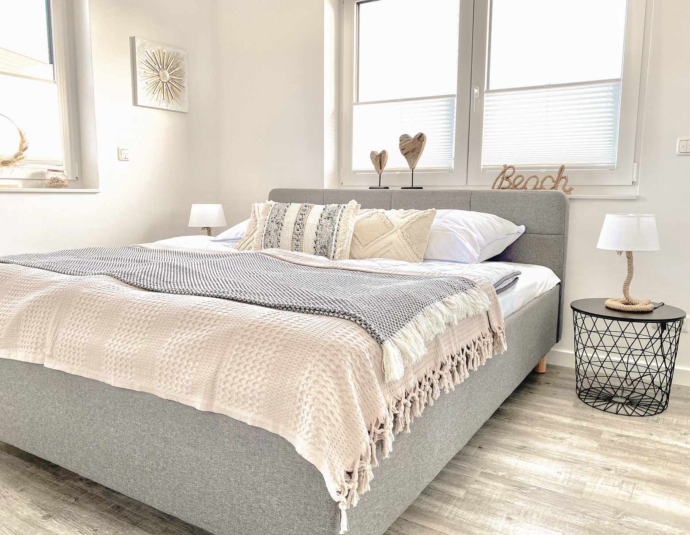

Barrierefreie Ferienwohnung Grömitz – Penthouse mit Aufzug
Genießen Sie einen komfortablen und barrierefreien Urlaub in unserer stufenlosen Ferienwohnung in Grömitz. Dank modernem Aufzug, bodengleicher Walk-In-Dusche und breiten Türen bietet diese Penthouse-Wohnung eine ideale Unterkunft für Senioren, Familien mit Kinderwagen und Gäste mit eingeschränkter Mobilität. Nur 200 Meter vom flachen Strandweg entfernt.
Komfortabler Urlaub für jedes Alter

Unsere Penthouse-Wohnung Lieblingsplatz Grömitz wurde mit dem Ziel entworfen, maximale Bequemlichkeit und Barrierefreiheit für alle Altersgruppen zu bieten. Ob Senioren, Familien mit Kinderwagen oder Gäste mit eingeschränkter Mobilität – bei uns verbringen Sie einen sorgenfreien und entspannten Urlaub an der Ostsee.
- ✓ Aufzug bis zur Wohnung: Schwellenfreier Zugang vom Stellplatz bis direkt vor die Wohnungstür im 2. Obergeschoss.
- ✓ Ebenerdige Dusche: Großzügiges Badezimmer mit bodengleicher Walk-In-Dusche ohne lästige Stolperkanten.
- ✓ Moderne Neubauwohnung: Hochwertiger Neubau (Dezember 2021) mit modernsten Standards und Fußbodenheizung.
- ✓ Komfortable und großzügige Raumgestaltung: Breite Türen, barrierefreie Zugänge zur Dachterrasse und schwellenfreier Übergang in alle Wohnbereiche.
- ✓ Geeignet für Senioren & eingeschränkte Mobilität: Durchdachte Details und stufenlose Erreichbarkeit aller Etagen sorgen für vollkommene Barrierefreiheit.
- ✓ Ruhige Lage und kurze Wege: Zentrale, ruhige Lage in der Seestraße 9a mit kurzen Wegen zu allen täglichen Zielen.
Nur wenige Schritte bis zur Ostsee
Durch die hervorragende Lage in der Seestraße 9a profitieren Sie von flachen, kurzen Wegen zu den beliebtesten Orten in Grömitz. Kein mühsames Parkplatzsuchen am Strand – Ihr Auto steht sicher am Haus.
Nur etwa 200 Meter bis zum Strand
Der feinsandige Ostseestrand von Grömitz liegt fast direkt vor Ihrer Haustür. Über einen kurzen, flachen Fußweg von ca. 200 Metern erreichen Sie den Strand und die Promenade in weniger als 3 Minuten zu Fuß.
Kurze Wege zur Promenade
Die belebte Strandpromenade lädt zu Spaziergängen ein. Der Bäcker befindet sich direkt vor der Haustür, und alle wichtigen Wege sind bequem barrierefrei zu bewältigen.
Restaurants und Einkaufsmöglichkeiten in der Nähe
Eine Vielzahl von gemütlichen Cafés, erstklassigen Restaurants, Supermärkten und Boutiquen liegt in unmittelbarer Gehdistanz in der Fußgängerzone.
Perfekter Ausgangspunkt
Die stufenlos zugängliche Wohnung bildet das ideale, ruhige Basislager, von dem aus Sie das gesamte Urlaubsangebot von Grömitz stressfrei erkunden können.
Ausstattung der barrierefreien Ferienwohnung
Unsere Penthouse-Ferienwohnung bietet Ihnen nicht nur Barrierefreiheit, sondern auch Komfort auf höchstem Niveau.
Große Dachterrasse
27 m² private Dachterrasse mit bequemem, schwellenfreiem Zugang, hochwertigen Gartenmöbeln und Weitblick.
Modern ausgestattetes Penthouse
Helle Neubauwohnung mit 64 m² Wohnfläche, moderner Einbauküche, Fußbodenheizung und stilvoller Einrichtung.
Aufzug
Ein moderner Fahrstuhl im Haus bringt Sie stufenlos von der Parkebene direkt vor die Wohnungstür.
Barrierefreundliche Ausstattung
Ebenerdige Walk-In-Dusche, breite Türen und schwellenfreier Zugang zu allen Zimmern und der Dachterrasse.
Kostenfreier Parkplatz
Ein fester, schwellenfrei erreichbarer Stellplatz befindet sich direkt am Haus. E-Ladesäule optional nutzbar.
Direkte Buchung beim Vermieter
Keine Vermittlungsgebühren oder Servicepauschalen von Drittanbietern. Ihr direkter, persönlicher Kontakt.